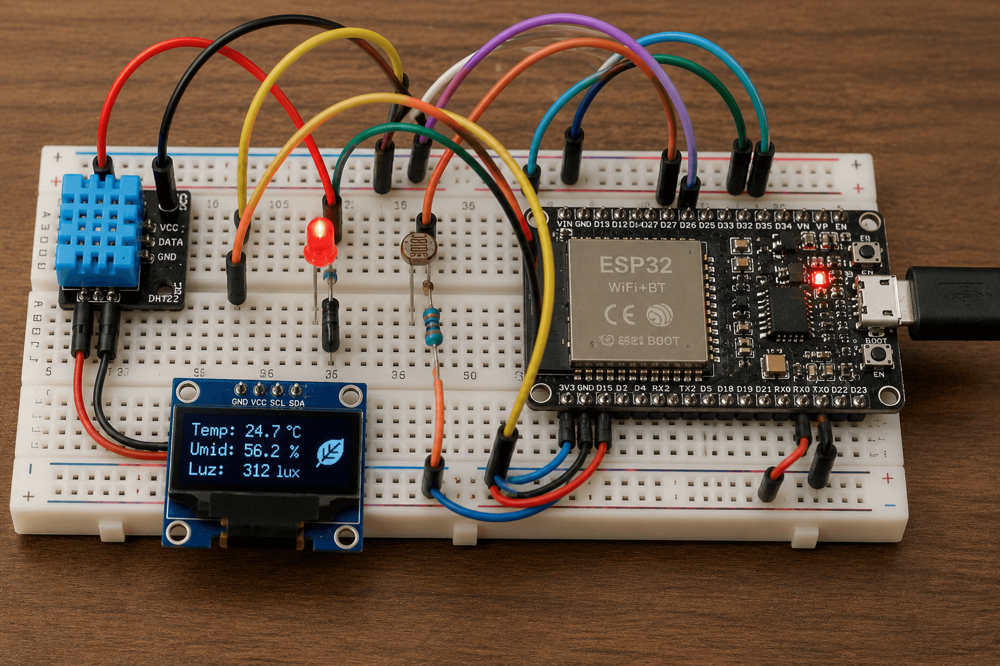
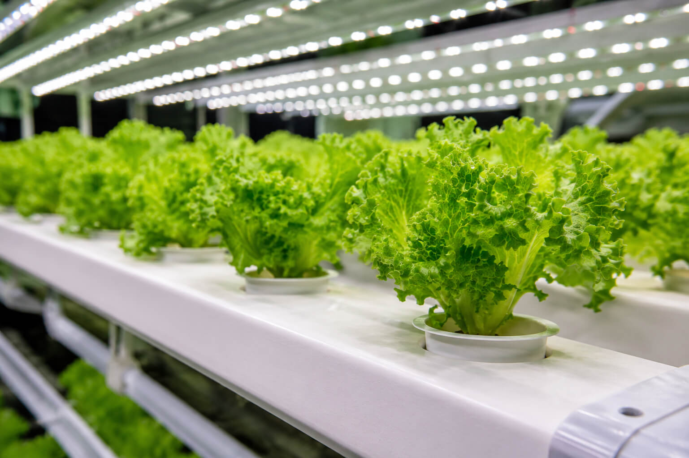

Cultivar na Lua. Cultivar em São Paulo. Mesma engenharia.
Sistema autônomo de cultivo hidropônico inspirado no programa Artemis da NASA.
Conhecer a solução
Alimentar humanos fora da Terra e nas cidades

1 kg de comida na Lua custa 1 milhão de dólares. Missões longas precisam de produção local.
O dia lunar tem 14 dias de sol e 14 de escuro total. Plantas não sobrevivem sem ajuda.
Hardware que decide sozinho, sem esperar a Terra

ESP32 com sensores de temperatura, umidade, luz e solo. A câmara irriga e ilumina sozinha, sem internet.
Python modela o ciclo dia/noite lunar com função trigonométrica. Dados orbitais vêm da NASA POWER API.
Produção autônoma de alimento em ambientes extremos
Permitir cultivo autônomo em bases lunares do Artemis, sem depender de comunicação com a Terra.
Validar a mesma arquitetura em fazendas verticais urbanas, replicável por menos de R$ 300 por câmara.
Dois cenários, uma engenharia

Agências espaciais como NASA e ESA que precisam de produção local de alimento em missões longas.
Pequeno produtor urbano de São Paulo e cooperativas de fazenda vertical que querem reduzir custos.
Números que já existem em fazendas verticais reais
Redução de 95% no consumo de água frente à agricultura tradicional, segundo dados de operações reais.
Custo de R$ 300 por câmara, contra R$ 30 mil ou mais das soluções comerciais atuais do mercado.
Do extremo ao cotidiano, o mesmo sistema

Na Lua, alimenta astronautas sem depender de reabastecimento vindo da Terra. A câmara opera sozinha.
Em São Paulo, abastece restaurantes e quintais com folhas frescas. Tecnologia do extremo pro cotidiano.
Por dentro do sistema
Ambiente extremo: a superfície lunar onde o sistema precisa operar sozinho
A mesma engenharia em fazendas verticais urbanas na Terra
Teste seus conhecimentos
10 perguntas sobre cultivo lunar, NASA Artemis e fazendas verticais.